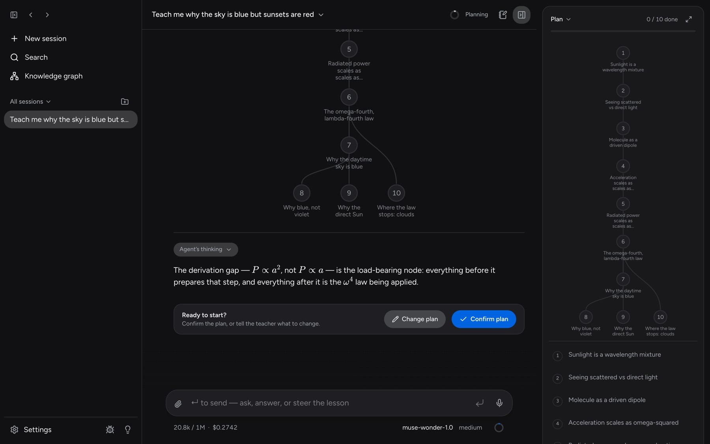
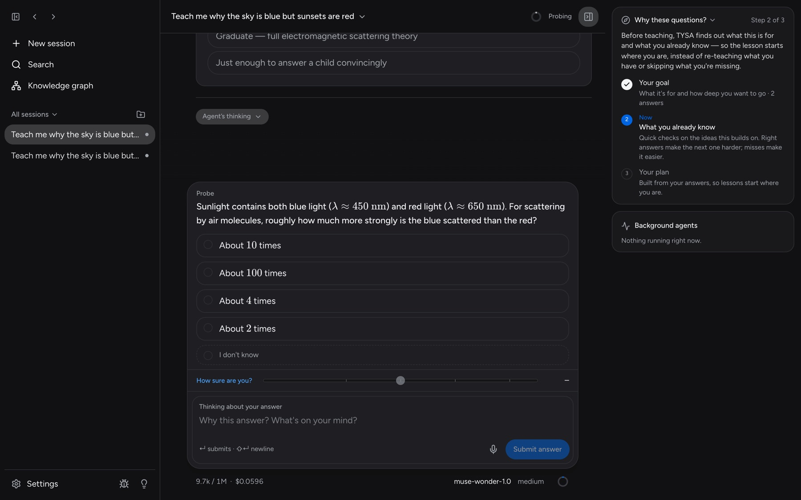

People say AI makes you dumber.
We built one that makes you think harder.
TYSA is a learning harness that finds where your understanding ends, and teaches from there.
Mac · Windows · Linux — open source, AGPL-3.0

A visible plan, from what you already know to your goal. Nothing is taught until you confirm it.
Most AI tools just explain.
TYSA measures first.
Two people asking the same question get two different lessons, and the app shows why. The plan changes as soon as your answers show it was wrong about you.

Not just right or wrong.
How you think.
Every question has a field for your reasoning and doubts, typed or dictated with Muse Voice Transcribe. A confident wrong answer and a lucky guess look the same on a score sheet. They don't look the same to TYSA.
Three ways to learn.
One graph of what you know.
Everything you learn is stored as claims and the reasoning that connects them, linked to the session where you learned it. Later lessons read the graph instead of starting from scratch.
Guided
Ask anything. TYSA measures, plans and teaches it in the loop above, one reasoning step at a time.
measure → plan → teachTextbook
Courses built from your own materials: PDFs, images and notes, taught chapter by chapter.
your PDFs · images · notesPractice
Mixed problems drawn from your knowledge graph, so you learn to recall the right idea, not just follow along.
interleaved · adaptive hintsEach model has one job.
All of them go through one Meta Model API key. Or run the same harness fully offline on Llama with Ollama.
The teaching agent: measures understanding, plans, teaches, runs practice.
WorkingLow-cost background agents: building the knowledge graph, grading, research.
WorkingOptional upgrade for the hardest planning.
WorkingDictation: speak your answers and thinking, streamed in real time.
Working"Tap the part that…" questions on diagrams, graded against the real outline.
In progressPictures drawn for your specific confusion, checked before they're shown.
In progressThe same harness running fully offline, no key needed.
WorkingAlso works with Google Gemini, Claude and OpenAI keys, and ChatGPT, GitHub Copilot or Grok subscriptions.
No account.
No subscription.
Bring your own keys
Pay providers only for what you use. A live meter shows the cost of every session.
Stored locally
Lessons, the knowledge graph, settings and keys live on your computer as plain files.
Portable
Export everything except your keys into one passphrase-encrypted .tysa file, and import it anywhere.
Inspectable
Every agent's system prompts are visible and editable in Settings.
Start with what
you already know.
Free and open source. The first time it opens, TYSA walks you through connecting an AI and picking models.
.dmg Detected on this computer Windows x64
.exe installer Detected on this computer Linux x86_64 · ARM64
.AppImage · .deb · .rpm Detected on this computer
You need a Meta Model API key, or Ollama to run fully offline with no key. The app isn't code-signed yet, so your computer warns you the first time: on a Mac use System Settings → Privacy & Security → Open Anyway; on Windows, More info → Run anyway.
Three commands. One server.
With Node.js 22+ and git. npm start installs dependencies, builds the web app and serves everything at localhost:8787.
$ git clone https://github.com/Akas333/TYSA.git $ cd TYSA $ npm start # → http://localhost:8787
packages/engineDomain core, teaching agents and prompts, stores, every /api route.
apps/serverHono server: mounts the engine, serves the app, relays dictation.
apps/webReact, Vite, Tailwind and React Router.
apps/desktopElectron: runs the server and shows the app in a window.
Made you think harder?
TYSA is built in the open by one indie developer. A star on GitHub is the easiest way to help other learners find it.